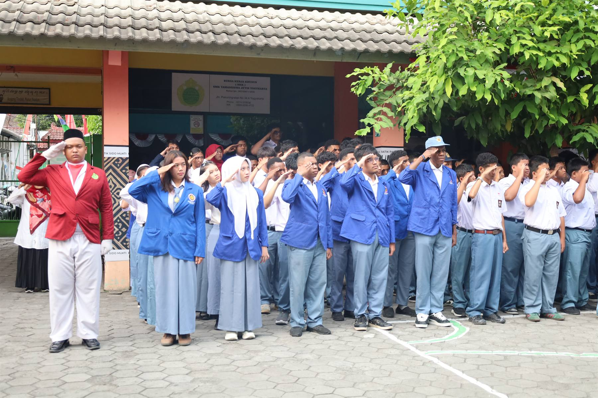

Projek Penguatan Profil Pelajar Pancasila
Setiap semester siswa mengerjakan satu projek lintas mata pelajaran, dari survei kondisi lingkungan sampai merancang produk karya siswa.
Yogyakarta
Sekilas sekolah
SMA Taman Madya Jetis berada di Jalan Pakuningratan No. 34, Cokrodiningratan, Yogyakarta. Setiap murid mendapat perhatian dari guru pendamping dan ruang untuk belajar sesuai potensinya.
Profil Sekolah
Berdiri sejak 1998 di kawasan Jetis, SMA Taman Madya Jetis membangun karakter lewat pembelajaran yang relevan, ringan, dan menyenangkan.
Terletak di pinggiran kota Yogyakarta, sekolah ini cukup jauh dari pusat kota namun tetap mudah dijangkau. Visi kami sederhana: menjadi sekolah tempat setiap siswa merasa dikenal.
Guru kami bekerja bersama sebagai pendamping, bukan sekadar penyedia informasi. Setiap portofolio siswa disusun lewat projek nyata yang menghubungkan mata pelajaran dengan kehidupan sehari-hari.
Program Unggulan
Setiap semester siswa mengerjakan satu projek lintas mata pelajaran, dari survei kondisi lingkungan sampai merancang produk karya siswa.
Laboratorium komputasi, robotika, dan olimpiade sains, dipandu mentor dari Universitas Gadjah Mada.
Pengelolaan sampah, kebun sekolah, dan literasi energi. Program ini dibangun bersama siswa dari nol.
Fasilitas
Galeri
![Siswa berdiskusi kelompok di halaman sekolah.](data:image/svg+xml,%3Csvg%20xmlns%3D'http%3A%2F%2Fwww.w3.org%2F2000%2Fsvg'%20viewBox%3D'0%200%20600%20800'%20width%3D'600'%20height%3D'800'%20role%3D'img'%20aria-label%3D'Placeholder%20gambar%20diskusi%20kelompok%20siswa'%3E%3Crect%20width%3D'600'%20height%3D'800'%20fill%3D'%23eef8f2'%2F%3E%3Crect%20y%3D'640'%20width%3D'600'%20height%3D'160'%20fill%3D'%23157347'%20opacity%3D'0.2'%2F%3E%3Cg%20fill%3D'%230f5132'%20opacity%3D'0.8'%3E%3Ccircle%20cx%3D'180'%20cy%3D'330'%20r%3D'46'%2F%3E%3Crect%20x%3D'130'%20y%3D'390'%20width%3D'100'%20height%3D'170'%20rx%3D'34'%2F%3E%3Ccircle%20cx%3D'310'%20cy%3D'300'%20r%3D'46'%2F%3E%3Crect%20x%3D'260'%20y%3D'360'%20width%3D'100'%20height%3D'200'%20rx%3D'34'%2F%3E%3Ccircle%20cx%3D'430'%20cy%3D'345'%20r%3D'46'%2F%3E%3Crect%20x%3D'380'%20y%3D'405'%20width%3D'100'%20height%3D'155'%20rx%3D'34'%2F%3E%3C%2Fg%3E%3Crect%20x%3D'120'%20y%3D'580'%20width%3D'360'%20height%3D'20'%20rx%3D'10'%20fill%3D'%23b07d1a'%20opacity%3D'0.8'%2F%3E%3Ctext%20x%3D'300'%20y%3D'730'%20text-anchor%3D'middle'%20font-family%3D'sans-serif'%20font-size%3D'22'%20fill%3D'%2333463c'%3EDiskusi%20kelompok%3C%2Ftext%3E%3C%2Fsvg%3E)

![Suasana perpustakaan saat jam tambahan belajar.](data:image/svg+xml,%3Csvg%20xmlns%3D'http%3A%2F%2Fwww.w3.org%2F2000%2Fsvg'%20viewBox%3D'0%200%20600%20400'%20width%3D'600'%20height%3D'400'%20role%3D'img'%20aria-label%3D'Placeholder%20gambar%20perpustakaan%20sekolah'%3E%3Crect%20width%3D'600'%20height%3D'400'%20fill%3D'%23eef8f2'%2F%3E%3Cg%20fill%3D'%230f5132'%20opacity%3D'0.8'%3E%3Crect%20x%3D'60'%20y%3D'60'%20width%3D'480'%20height%3D'60'%20rx%3D'6'%2F%3E%3Crect%20x%3D'60'%20y%3D'150'%20width%3D'480'%20height%3D'60'%20rx%3D'6'%2F%3E%3Crect%20x%3D'60'%20y%3D'240'%20width%3D'480'%20height%3D'60'%20rx%3D'6'%2F%3E%3C%2Fg%3E%3Cg%20fill%3D'%23d9a327'%20opacity%3D'0.9'%3E%3Crect%20x%3D'80'%20y%3D'74'%20width%3D'26'%20height%3D'32'%20rx%3D'3'%2F%3E%3Crect%20x%3D'116'%20y%3D'70'%20width%3D'22'%20height%3D'36'%20rx%3D'3'%2F%3E%3Crect%20x%3D'148'%20y%3D'76'%20width%3D'30'%20height%3D'30'%20rx%3D'3'%2F%3E%3Crect%20x%3D'190'%20y%3D'72'%20width%3D'24'%20height%3D'34'%20rx%3D'3'%2F%3E%3Crect%20x%3D'224'%20y%3D'78'%20width%3D'28'%20height%3D'28'%20rx%3D'3'%2F%3E%3Crect%20x%3D'264'%20y%3D'70'%20width%3D'20'%20height%3D'36'%20rx%3D'3'%2F%3E%3Crect%20x%3D'294'%20y%3D'74'%20width%3D'30'%20height%3D'32'%20rx%3D'3'%2F%3E%3Crect%20x%3D'336'%20y%3D'72'%20width%3D'24'%20height%3D'34'%20rx%3D'3'%2F%3E%3Crect%20x%3D'370'%20y%3D'76'%20width%3D'28'%20height%3D'30'%20rx%3D'3'%2F%3E%3Crect%20x%3D'410'%20y%3D'70'%20width%3D'22'%20height%3D'36'%20rx%3D'3'%2F%3E%3Crect%20x%3D'442'%20y%3D'74'%20width%3D'30'%20height%3D'32'%20rx%3D'3'%2F%3E%3Crect%20x%3D'80'%20y%3D'164'%20width%3D'26'%20height%3D'32'%20rx%3D'3'%2F%3E%3Crect%20x%3D'116'%20y%3D'160'%20width%3D'22'%20height%3D'36'%20rx%3D'3'%2F%3E%3Crect%20x%3D'148'%20y%3D'166'%20width%3D'30'%20height%3D'30'%20rx%3D'3'%2F%3E%3Crect%20x%3D'190'%20y%3D'162'%20width%3D'24'%20height%3D'34'%20rx%3D'3'%2F%3E%3Crect%20x%3D'224'%20y%3D'168'%20width%3D'28'%20height%3D'28'%20rx%3D'3'%2F%3E%3Crect%20x%3D'264'%20y%3D'160'%20width%3D'20'%20height%3D'36'%20rx%3D'3'%2F%3E%3Crect%20x%3D'294'%20y%3D'164'%20width%3D'30'%20height%3D'32'%20rx%3D'3'%2F%3E%3Crect%20x%3D'336'%20y%3D'162'%20width%3D'24'%20height%3D'34'%20rx%3D'3'%2F%3E%3Crect%20x%3D'370'%20y%3D'166'%20width%3D'28'%20height%3D'30'%20rx%3D'3'%2F%3E%3Crect%20x%3D'410'%20y%3D'160'%20width%3D'22'%20height%3D'36'%20rx%3D'3'%2F%3E%3Crect%20x%3D'442'%20y%3D'164'%20width%3D'30'%20height%3D'32'%20rx%3D'3'%2F%3E%3C%2Fg%3E%3Ctext%20x%3D'300'%20y%3D'360'%20text-anchor%3D'middle'%20font-family%3D'sans-serif'%20font-size%3D'20'%20fill%3D'%2333463c'%3EPerpustakaan%20sekolah%3C%2Ftext%3E%3C%2Fsvg%3E)

Berita Sekolah
Kumpulan kabar dan kegiatan terbaru sekolah. Klik salah satu kartu untuk membaca berita lengkapnya di halaman kami.
Informasi
Calon siswa dapat mendaftar secara daring atau datang langsung ke loket sekolah pada hari kerja pukul 08.00–13.00 WIB.
Seluruh siswa kelas XII mengikuti Ujian Tes Kemampuan Akademik yang dimulai 8 September 2026. Doa dan semangat kami menyertai mereka semua.
Tim OSN SMA Taman Madya Jetis meraih juara 1 tingkat kota Yogyakarta, prestasi pertama sekolah pada bidang ini sejak 2019.
Kata Mereka
Anak saya selalu senang pulang sekolah. Guru-gurunya tahu nama setiap murid dan sering menghubungi kami soal perkembangannya.
Di sini saya belajar bahwa presentasi tidak harus sempurna. Yang penting saya bisa menyampaikan gagasan dengan jelas.
Sekolahnya nyaman dan dekat rumah. Fasilitasnya lengkap untuk ukuran sekolah di pinggiran kota.
Kuota terbatas: 28 siswa per kelas. Pendaftaran gelombang 1 ditutup 30 Oktober 2026 atau saat kuota terpenuhi.
Kontak